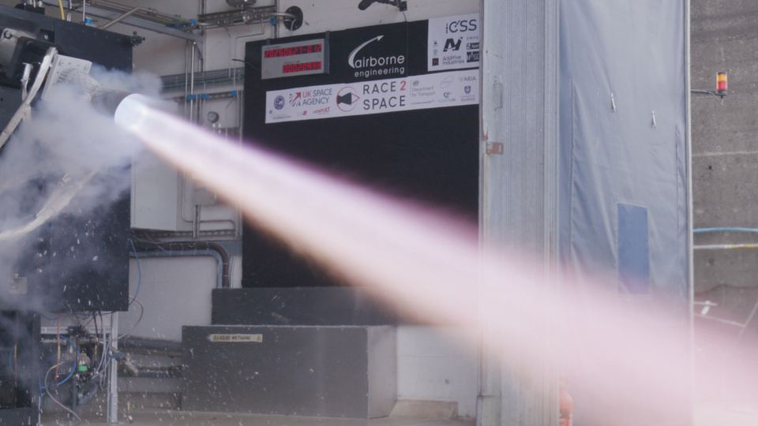
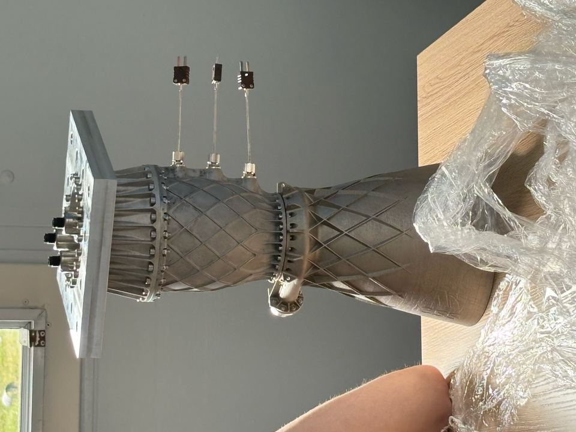
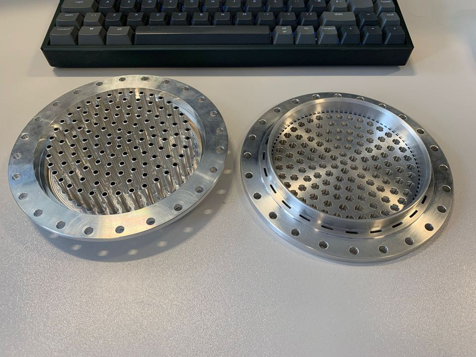
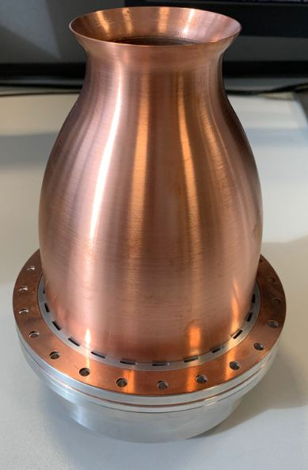
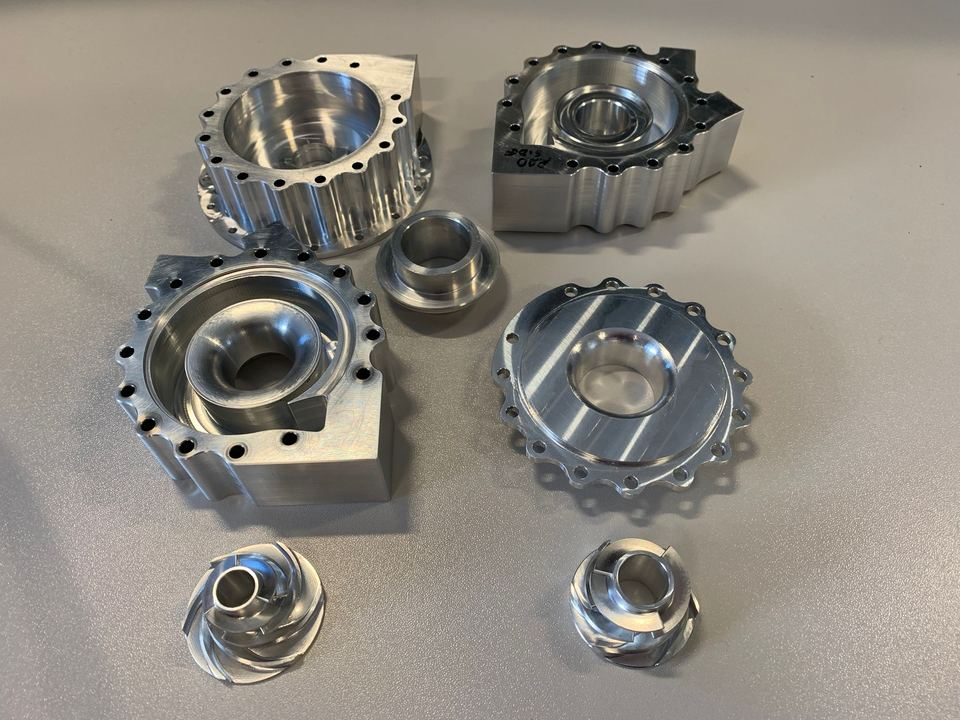
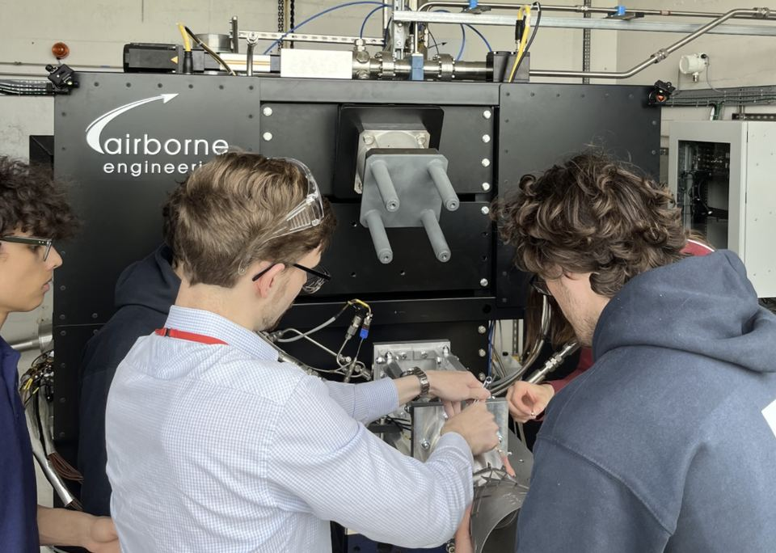
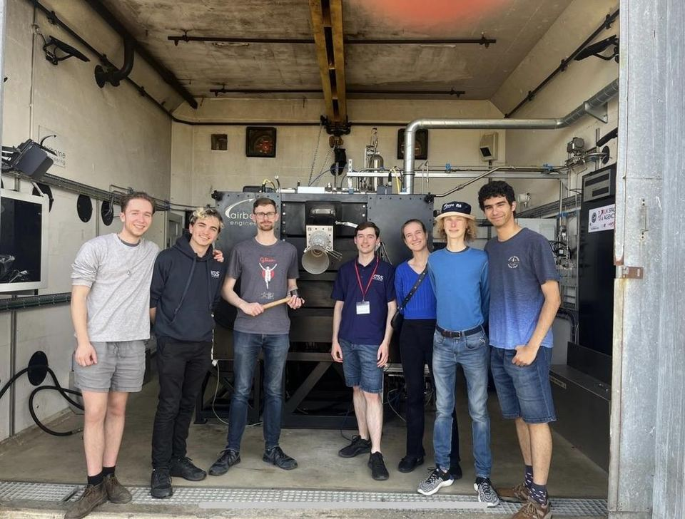

Project Tycho
A high-thrust liquid bipropellant rocket engine
We're a team of about 20 undergrad, masters and PhD students designing, building and firing a liquid rocket engine. Tycho is the new engine, the older design was called Kepler (you'll still see that name around).
What we're going for:
- the UK student record for highest thrust from a liquid bipropellant engine (10 kN)
- being the first student team to test a liquid biprop engine with turbomachinery we designed ourselves
Our hot-fire at Race 2 Space in July, Westcott Venture Park
The engine
| Propellants | Liquid oxygen + isopropyl alcohol (IPA) |
|---|---|
| Thrust | ~11 kN (about 1120 kg) at 60 bar chamber pressure |
| Cycle | Gas-generator (open) cycle |
| Injector | Coaxial swirl |
| Cooling | LOx regen + film cooling |
| Other stuff | Supersonic turbomachinery, autogenous re-pressurisation |
Changes from the last design: made in fewer parts, a new 24 kRPM turbo, and a longer chamber with a shorter nozzle.
What you'll learn
CAD, FEA and CFD, regen cooling analysis, injector and nozzle design, turbomachinery, machining and metal 3D printing, writing test procedures and design reviews (PDR/CDR), and a bit of electronics for the flow control unit and pressure sensors.
New members can do the Rocket Engine Design Crash Course: 4 weeks, you design your own engine using the same theory and software we use for the real one. Good if you've never touched rocket engines before.
Photos







What we've done
- Hot-fired at Race 2 Space in the Airborne Engineering test bays: 4500 N, enough to lift a grand piano
- Tested our turbine (as a final year project) and it worked really well
- Passed our CDR and wrote the safety and test procedures
- New chamber + nozzle, new injector, turbomachinery manufactured
- Submitted the Tycho thrust chamber PDR to Race 2 Space
Next: turbopump testing at the start of term, more hot-fires later in the year, and a full integrated test of the new engine.
Updates
Follow @ic_space_society for test day videos.
Join
Meeting times and rooms get posted in the Tycho group chat in the ICSS WhatsApp community. No experience or application needed.
Project lead: Oliver Edmond. Technical leads: Sanan Shankar and Tim Barrett. Questions? Email space.society@imperial.ac.uk